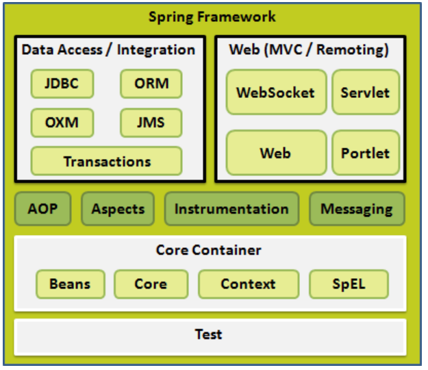
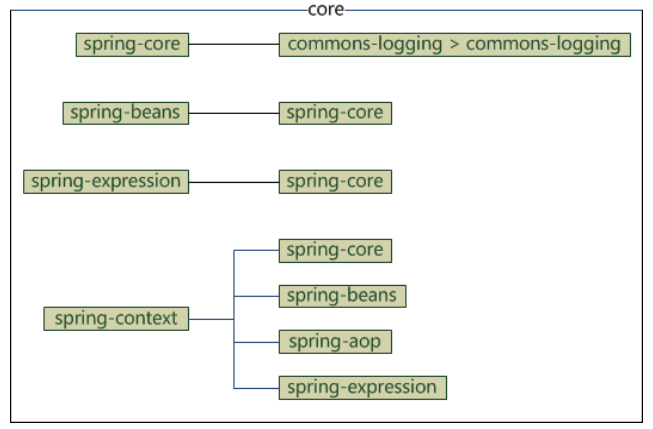

Spring 概述
概述
- Spring是最受欢迎的企业级Java应用程序开发框架
- Spring框架是一个开源的Java平台
- Spring是轻量级的框架
- Spring框架的目标是使J2EE开发变得更加容易使用，通过启用基于POJO编程模型来促进良好的编程实践
三层架构
- 表现层 web层 MVC是表现层的一个设计模型
- 业务层 service层
- 持久层 dao层
Spring的优良特性
- 非侵入式：基于Spring开发的应用中的对象可以不依赖与Spring的API
- 控制反转（IOC）：对象的创建都是给了Spring框架
- 依赖注入（DI）：依赖的对象不需要手动调用set方法去设置，而是通过配置赋值
- 面向切面编程（AOP）
- 容器：Spring是一个容器，其包含并且管理应用对象的生命周期
- 组件化：Spring实现了使用简单的组件配置组合成一个复杂应用，在Spring中可以使用XML和Java注解组合这些对象
- 一站式：在IOC和AOP的基础上，整合各种企业级应用的开源框架和优秀的第三方类库
优点
- 提供一致的事务管理接口，可向下扩展到（使用一个单一的数据库）本地事务并扩展到全局事务
- 轻量级的IOC容器，有利于在内存和CPU资源有限的计算机上开发和部署应用程序
- 封装了一些非常难用的API，使这些API的应用难度大大降低
- Spring的web框架是一个设计良好的web MVC框架
- Spring编写的代码测试比较容易，因为环境相关的代码被移植到这个框架中
- 利用了很多现有的技术，如ORM框架、日志框架等等
- 在一个单元模式中是有组织的，即使包和类数量比较多，也只需要担心关注的部分
- 可以使开发人员使用POJOs开发企业级的应用程序
依赖注入
控制反转（IOC）是一个通用的概念，可以用许多不同的方式去实现，依赖注入仅仅是控制反转的一个具体例子。
当编写一个复杂的Java应用程序的时候，应用程序类应该尽可能的独立于其他java类来增加这些类的可重用可能性。当进行单元测试时，可以使它们独立于其他类进行测试。依赖注入有助于将这些类粘合到一起，并且在同一时间让它们保持独立
什么是依赖注入？
依赖注入拆分来看，依赖：顾名思义，A依赖于B；注入，B将通过IOC注入到A中
依赖注入可以以向构造方法传递参数的方式发生，或者通过使用setter方法
面向切面编程（AOP）
Spring的一个关键组件是面向切面编程（AOP）框架，一个程序中跨越多个点的功能被称为横切关注点，这些横切关注点在概念上独立于应用程序的业务逻辑，如日志记录、声明性事务、安全、缓存等待
在OOP中模块化的关键单元是类，而在AOP中模块化的关键单元是方面，AOP帮助开发人员将横切关注点从它们所影响的对象中分离出来，而DI帮助开发人员将应用程序对象从彼此中分离出来
Spring的AOP模块提供了面向切面的程序设计实现，可以定义诸如方法拦截器和切入点等，从而使实现功能代码彻底解耦出来
体系结构
Spring 有可能成为企业应用程序的一站式服务点，然而Spring是模块的，允许开发人员挑选和选择适用的模块，而不必把剩余的部分也引入。

Spring提供了约二十个模块，可以根据应用程序的要求来使用
核心容器
核心容器由spring-core，spring-beans，spring-context，spring-context-support和spring-expression(SPEL Spring表达式语言，spring expression language)等模块组成
spring-core：该模块提供了框架的基本组成部分，包括IOC及DI功能
spting-beans：该模块提供了BeanFactory，工厂模式的实现，移除了编码式单例的需要，并且可以把配置和依赖从实际编码逻辑中解耦出来
context：
- 该模块由core和beans模块的基础上建立起来的，以一种类似于JNDI注册的方式访问对象
- context模块继承自Bean模块，添加了国际化、事件传播、资源加载和透明的创建上下文等功能
- context支持Java EE的功能，ApplicationContext接口是context模块的焦点
- spring-context-support提供了对第三方集成到Spring的上下文支持，如缓存、邮件等
spring-expression提供了强大的表达式语言，用于在运行时查询和操作对象图
其完整依赖关系如下：

数据访问/集成
数据访问/集成层包括JDBC、ORM、OXM、JMS和事务处理模块
JDBC：Java Data Base Connectivity，该模块提供了JDBC抽象层，其消除了冗长的JDBC编码和对数据库供应商特定错误代码的解析
ORM：Object Relational Mapping，该模块提供了对流行的对象关系映射API的集成，包括 JPA，JDO和Hibernate等等，通过此模块可以让这些ORM框架和Spring的其他功能整合
OXM：Object XML Mapping，该模块提供了对OXM实现的支持，如JAXB、XML Beans等等
JMS：Java Message Service，该模块包含了生产和消费消息的功能，集成了spring-messageing模块
事务：为实现特殊接口类及所有的POJO支持编程式和声明式事务管理
- 编程式事务管理：需要自己写beginTransaction()，commit()，rollback()等事务管理方法，粒度更细
+ 声明式事务管理：通过注解或配置由spring处理
Web
Web层由Web、Web-MVC、Web-Socket和Web-Portlet组成
- Web：该模块提供面向Web的基本功能和面向web的应用上下文，还包括HTTP客户端以及Spring远程调用中与web相关部分
- Web-MVC：该模块为web应用提供了模型视图控制（MVC）和REST Web服务的实现。Springd的MVC框架可以使领域模型代码和web表单完全分离，且可以与Spring框架的其他所有功能进行集成
- Web-Socket：该模块为WebSocket-based提供了支持，而且在web应用程序中提供了客户端和服务器端之间通信的两种方式
- Web-Portlet：该模块提供了用于Portlet环境的MVC框架，并反映了spring-webmvc模块的功能
其他部分
- AOP：该模块面向切面的编程实现，允许开发人员定义方法拦截器和切入点对代码进行解耦，从而使实现功能的代码彻底的解耦出来
- Aspects：该模块提供了与AspectJ的集成，是一个功能强大且成熟的面向切面编程的框架
- Instrumentation：该模块在一定的应用服务器中提供了类instrumentation的支持和类加载器的实现
- Messageing：该模块为STOMP提供了支持作为在应用程序中WebSocket子协议的使用，同时，它也支持一个注解编程模型，它是为了选路和处理来自WebSocket客户端的STOMP信息
- 测试：该模块支持对具有JUnit或TestNG框架的Spring组件的测试